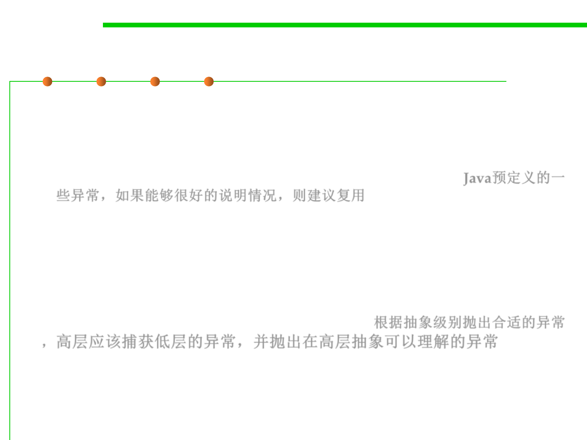

7.2 Error and Exception Handling
Other Tips for Using Exceptions
▪ Avoid unnecessary checked exceptions
▪ Favor standard exceptions
– Absolutely it makes sense to reuse Exception classes when they reasonably
describe the scenario that caused the exception to be thrown. Java预定义的一
些异常，如果能够很好的说明情况，则建议复用
– IllegalArgumentException – invalid parameter value
– IllegalStateException – invalid object state
– NullPointerException – null paramwhere prohibited
– IndexOutOfBoundsException – invalid index param
▪ Throw exceptions appropriate to abstraction 根据抽象级别抛出合适的异常
，高层应该捕获低层的异常，并抛出在高层抽象可以理解的异常
▪ Document all exceptions thrown by each method
– Checked and unchecked
– But don’t declare unchecked exceptions!